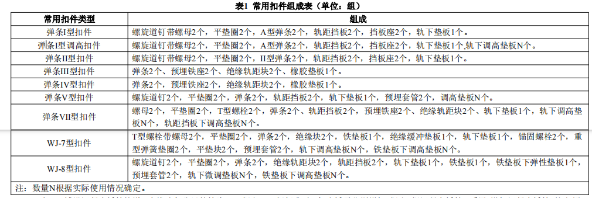

一、本章包括大型机械安拆与调试、无缝线路、有缝线路、其他。
二、机械铺轨、人工铺轨、铺设长钢轨定额中未含钢轨、轨枕、扣配件和接头夹板等轨料，应与相应类型的轨料定额配套使用。
三、铺轨定额中不包含合拢口锯轨、钢轨钻孔内容，应依据设计数量按第六章中锯钢轨、钢轨钻孔定额计算。
四、长轨铺轨机安拆与调试定额按单枕法铺轨机组大解体（主机及辅机车体与转向架制动连杆、机械连接分解，车体与走行马达液压管路分解，车
体与转向架电气连接线路分解等）占 60%、小解体占 40%综合考虑。
五、新铺线路换铺法铺设长钢轨定额应与轨节拼装、铺设轨节及长钢轨运输定额配套使用。无砟轨道铺轨应与无砟轨道扣件散布、预安装及涂油定额、
轨道调整定额配套使用。
六、钢轨铺设定额仅适用于20‰以下坡度地段和1km以下隧道地段。若用于20‰以上坡度地段，定额人工和机械消耗量乘以1.5的系数；若用于1km以
上隧道地段，定额人工和机械消耗量乘以1.25的系数；若用于20‰以上坡度的1km以上隧道地段，定额人工和机械消耗量乘以1.75的系数。
七、无砟轨道调整定额应与无砟轨道更换精调件定额配套使用。
八、无砟轨道轨料定额已含完整的扣件数量，无砟轨道更换精调件定额不含精调件数量，精调件费用由设计另行分析计算。其中，采用绝缘轨距块工
具件循环利用模式进行无砟轨道调整，绝缘轨距块工具件使用费包含材料摊销费、整修管理费和价外运杂费，可按不含可抵扣进项税额的新料价格的30%乘
以绝缘轨距块设计数量计算；绝缘轨距块精调件在无砟轨道轨料定额中考虑，该笔费用无需计算。
九、无缝线路轨料定额中的钢轨，其工地搬运及操作损耗率，系按0.4%编制。
十、轨料运输定额系按双机牵引编制，综合考虑了各种坡度因素，不得因坡度情况调整机车消耗量。
十一、无缝线路轨料运输定额单枕法运输轨料为钢轨、轨枕及扣配件，换铺法运输轨料为钢轨。
十二、无缝线路轨料运输定额系按新建线路上运输编制，营业线轨料运输应按运杂费计算。
十三、场内焊接长钢轨定额包含焊头落锤试验内容及费用，不含型式试验费用，不含焊轨基地建场费用；本定额系按100m定尺轨焊接工艺编制，如用
于25m定尺轨焊接，人工和机械消耗量乘以0.55的系数。
十四、钢轨焊接定额包含型式试验（含落锤试验）制作试件所消耗的钢轨数量，不含型式试验其他费用，该费用在检验试验费中考虑。工地钢轨焊接
定额如用于道岔内钢轨焊接，人工、机械消耗量乘以1.1的系数。
十五、道岔打磨定额已综合考虑道岔受限区段打磨。
十六、无砟轨道预打磨后清理铁屑定额应与无缝线路钢轨预打磨、道岔预打磨定额配套使用。
十七、轨节拼装定额仅适用于机械铺轨。
十八、有缝线路轨料定额中的钢轨，其工地搬运及操作损耗率，系按0.1%编制，仅适用于正线。当用于站线及新建枢纽编组站时，需采用站线增加
钢轨损耗定额分别增列0.1%和0.2%的损耗。
十九、有缝线路轨料定额包含因铺设短轨而引起接头增加所需接头夹板和螺栓的数量。
二十、无砟轨道、有砟轨道扣件以组为单位，单根钢轨上每个扣件节点为一组。常用扣件组成见表1。

二十一、铺设混凝土桥枕轨道，当线路每公里轨枕为1760根和1680根标准时，每座桥需分别增加1根和2根混凝土桥枕，并应与“增加混凝土桥枕”定
额配套使用。
二十二、道岔尾部有枕无轨地段铺轨，系指道岔根端之外已铺长岔枕地段的铺轨，长岔枕铺设的内容均在铺道岔定额中。
二十三、正线应力放散及锁定定额系按放散锁定2次编制。
二十四、工程量计算规则。
1.铺轨的工程量按设计图示每股道的中心线长度（不含道岔及钢轨伸缩调节器长度）计算，道岔长度是指从基本轨前端至辙叉根端的距离，特殊道岔
以设计图纸为准，钢轨伸缩调节器长度为伸缩零点位置时的设计全长，铺轨工程量不扣除接头轨缝处长度。
2.道岔尾部有枕无轨地段铺轨，按道岔根端至末根岔枕的中心距离以“km”为单位计算。
3.无砟轨道铺轨机、单枕法长轨铺轨机、轨节铺轨机、轨排钉联机安拆与调试定额，在一个铺轨基地仅按安拆一次计列。
4.长钢轨焊接按焊接工艺划分，接头设计数量以“1个接头”为单位计算。
5.应力放散及锁定定额，按放散锁定次数和长度，以“km”和“组·次”为单位计算。
6.回收工具轨定额按铺轨长度以“km”为单位计算。
一、本章包括铺道岔、道岔轨料、道岔轨料运输、临时轨道（道岔）铺拆、其他、安装钢轨伸缩调节器。
二、铺道岔定额未含道岔、岔枕轨料，应与相应类型的轨料定额配套使用。
三、道岔轨料定额中道岔已包含扣件、非金属件（如橡胶垫板）等材料。
四、铺道岔定额不包括安装扳道设备工作内容。当系非联锁道岔时，需与安装扳道器定额配套使用。
五、铺道岔定额未含岔内外焊接、应力放散及锁定、转辙器安装等工作内容。其中铺设无砟轨道道岔定额未含岔下现浇混凝土及钢筋工作内容。
六、道岔装卸及运输材料含道岔钢轨件、扣件、岔枕及转辙器等。
七、临时轨道（道岔）铺拆定额用于施工组织设计确定的过渡工程。
八、道岔重车碾压定额仅用于有砟重载铁路正线道岔。
九、组合道岔，由单开道岔和复式交分道岔定额子目组合使用。
十、以直向通过速度区分的定额，当用于重载货运铁路时，不受直向通过速度限制，按设计轨重选用。
十一、安装钢轨伸缩调节器定额中钢轨伸缩调节器已包含钢轨、扣配件、轨枕（轨道板）等材料，含上述材料铺设（安装）的全部工作内容。
十二、工程量计算规则。
1.铺道岔工程量按设计图示数量计算。
2.铺道岔按道岔类型、岔枕、道床形式划分，以“组”为单位计算。
3.安装钢轨伸缩调节器定额，按有砟轨道、无砟轨道，含伸缩装置、不含伸缩装置划分，以“套”为单位计算。
一、本章包括无砟道床、粒料道床。
二、底座道床板混凝土、钢筋定额子目适用于无砟轨道底座、道床板。道岔下及过渡段钢筋混凝土套用此定额时，定额中人工及机械消耗量乘以2.0
的系数。摩擦板、端刺、端梁施工套用此定额时，定额中人工及机械消耗量乘以1.5的系数。
三、无砟道床现浇混凝土的拌制、运输应按“基本定额”相关子目另计。
四、钢筋制作及绑扎定额应与钢筋吊装定额配套使用；成型钢筋运输应按“基本定额”相关子目另计。
五、两布一膜铺设、板缝间混凝土钢筋、侧向挡块混凝土钢筋、剪力筋制安、齿槽预埋钢筋、轨道板侧面及板间封边、轨道板纵向连接、后浇带钢板
连接安装定额适用于CRTSⅡ型轨道板。
六、CRTSⅠ型轨道板预应力轨道板预制系双向预应力板。
七、CRTSⅠ型、Ⅱ型、Ⅲ型轨道板预制定额系按标准板编制，如用于曲线板、补偿板及特殊板（如道岔板），预制模板按1个项目摊销，并扣除模板回
收残值。
八、CRTSⅡ型轨道板预制定额如用于道岔板预制工程，定额中人工及机械消耗量乘以1.15的系数。
九、CRTSⅢ型轨道板预应力钢筋子目系按台座法张拉工艺编制。
十、CRTSⅠ型、Ⅱ型、Ⅲ型轨道板、CRTS双块式、弹性支承块式轨枕定额中已计入1%的成品损耗（含预制场废品及运输、铺设操作损耗）。
十一、CRTSⅠ型、Ⅲ型轨道板式、CRTS双块式、弹性支承块式轨枕预制定额不含扣件预安装及涂油工作内容。
十二、混凝土面层凿毛、冲洗、吹干定额适用于部分无砟轨道设计要求凿毛的工程。
十三、凸形挡台环氧树脂定额适用于CRTSⅠ型无砟轨道工程。
十四、底座伸缩缝制作定额适用于预留道床变形缝工程。
十五、无砟轨道道床施工测量定额包含底座施工、道床施工、铺板（枕）施工中的全部测量工作内容，不包括CPⅠ、CPⅡ、CPⅢ网测设及复测以及精
调测量内容。
十六、铺面砟定额应按开通速度要求与轨道调整定额配套使用。
十七、粒料道床定额消耗量适用于石质、级配碎石、级配砾石基床和桥梁、隧道地段，当用于土质基床地段时，考虑粒料的压实陷入基床的因
素，定额人工、材料、机械消耗量应乘以1.05的系数。
十八、本册定额道砟按一级道砟编制，如设计采用特级道砟或二级道砟，可对道砟进行抽换。
十九、重载铁路铺面砟和轨道调整，应采用开通速度小于等于200km/h相关定额子目。
二十、有砟轨道调整定额应与有砟轨道更换精调件定额配套使用。
二十一、有砟轨道轨料定额已含完整的扣件数量，有砟轨道更换精调件定额不含精调件数量，精调件材料费用由由设计另行分析计算。
二十二、铺面砟、有砟轨道调整定额已综合考虑不同开通速度的施工质量验收标准，不得因捣固次数进行调整。
二十三、工程量计算规则。
1.铺土工布按设计图示铺设面积以“m2”计算。
2.混凝土道床按设计图示体积以“m3”计算。
3.普通钢筋的重量按钢筋设计长度乘理论单位重量计算。不得将焊接料、绑扎料、接头套筒、垫块等材料计入工程数量。
4.轨道板内非预应力钢筋数量按不含螺旋筋（低碳钢丝）的数量计算；弹性支承块非预应力筋数量按光圆钢筋和冷拉低碳钢丝重量之和计算。
5.预应力钢筋数量按下料长度乘理论单位重量计算；预应力钢棒数量按含锚垫板重量的数量计算。
6.底座钢筋绝缘处理的数量按设计绝缘卡子个数计算。
7.底座伸缩缝单位为处，是指事先预留的伸缩缝，单线每处。
8.铺粒料道床底砟、站线线间石砟应按设计断面乘以设计长度以“100m3”为单位计算。
9.铺粒料道床面砟应按设计断面乘以设计长度，并扣除轨枕所占道床体积以“100m3”为单位计算。
10.隔离层及弹性垫层数量按土工布设计铺设面积计算，弹性垫层不再另计。
一、本章包括安装轨道加强设备、铺设护轮轨。
二、铺设护轮轨定额，系按双侧编制，单侧时可折半使用。
三、工程量计算规则。
1.安装轨距杆按直径、设计数量以“100根”为单位计算。
2.安装轨撑垫板、防爬器按轨型设计数量以“1000个”为单位计算。
3.安装防爬支撑分木枕、混凝土枕按设计数量以“1000个”为单位计算。
4.铺设护轮轨工程量，按设计长度以“100双侧米”为单位计算。
一、本章包括线路平交道口、车挡及挡车器、线路及信号标志、轨道常备材料。
二、单线道口，由混凝土、钢筋、道口卧轨定额子目组合使用；股道间道口，由钢筋混凝土及道口栏木定额子目组合使用。
三、线路及信号标志多数采用反光标志编制，实际使用时如采用非反光标志，可将定额中相应反光材料删除使用。
四、线路标志中线路基桩系按无冻害时基础深0.7m编制，如遇到冻害地段，应根据冻土层深度另外套用基础深增量定额。
五、备料定额中轨料为验收后运营部门所使用。
六、道岔备料定额消耗量适用于备整组道岔，当所备材料为道岔基本轨、辙叉和尖轨（含配套扣配件）时，定额中道岔材料消耗量应乘以0.85
系数。
七、工程量计算规则。
1.线路及信号标志按设计数量以“100个”为单位计算。
2.车挡、挡车器按设计数量以“处”为单位计算。
3.平交道口
（1）道口面板混凝土按设计数量以“10m3”为单位计算。
（2）道口面板钢筋按设计数量以“t”为单位计算。
（3）道口卧轨按道口通行宽度以“10m”宽为单位计算。
（4）道口栏木按线路间道口面积以“10m2”为单位计算。道口面积计算公式为：道口面积=道口宽度（道口铺面宽）×道口长度（相邻两股道枕木头之
间距离）。
（5）橡胶道口按道口面积以“10m2”为单位计算。道口面积计算公式为：道口面积=道口宽度（道口铺面宽）×道口长度。
4.轨道常备材料中铺轨备料按铺轨设计数量以“区间”、“100km”为单位计算。当设计要求与定额消耗量不同时，应按设计数量调整。正线及到发线的
有砟轨道常备材料应按“工区”和“100km”两种定额单位分别计算。
5.轨道常备材料中铺道岔备料按设计或有关规定计算出的实际备料数量以“组”为单位计算。
一、本章包括拆除工程、起落线路及道岔、拨移线路及道岔、更换钢轨、抽换轨枕及清筛道床。
二、起、落、拨、移线路、道岔定额、清筛道床定额均未含补充料，实际发生时可按设计确定的数量另计。
三、抽换轨枕定额未含扣配件材料，使用时应按设计确定的旧料利用率另计补充材料的费用。
四、道岔纵移横移定额根据移动方向及距离结合增项定额使用，该定额适用于既有线改造工程。该定额未含补充料，实际发生时可按设计确定的数量
另计。
五、大型机械清筛道床定额，如在无缝线路地段施工时，应与应力放散及锁定子目配套使用。当用于电气化营业线铁路时，人工和机械台班消耗量乘
以1.08的调整系数。其中开通速度是指铁路正常运营时线路设计速度。
六、工程量计算规则。
1.拆除线路按设计数量以“km”为单位计算。
2.拆除道岔按设计数量以“组”为单位计算。
3.拆除防爬器按设计数量以“1000个”为单位计算。
4.拆除轨距杆按设计数量以“1000根”为单位计算。
5.拆除道岔转辙器按设计数量以“10组”为单位计算。
6.拆除道口分单线、双线按设计数量以“10m宽”为单位计算。
7.拆除车挡按设计数量以“处”为单位计算。
8.拆除护轮轨按设计数量以“100双侧米”为单位计算。
9.钢轨钻孔按设计数量以“100孔”为单位计算。
10.锯钢轨按设计数量以“10个锯口”为单位计算。
11.线路起落道按起落道高度及设计数量以“km”为单位计算。
12.道岔起落道按起落道高度及设计数量以“组”为单位计算。
13.拨移线路按设计数量以“km”为单位计算。
14.拨移道岔按设计数量以“组”为单位计算。
15.道岔纵、横移按设计平移距离以“组”为单位计算。
16.更换钢轨分钢轨类型及轨枕类型按设计数量以“km”为单位计算。
17.道岔替换线路按道岔类型及设计数量以“组”为单位计算。
18.抽换轨枕按轨枕类型及设计数量以“100根”为单位计算。
19.人工清筛道床按设计数量以“100m3”为单位计算。
20.大型机械清筛道床按清筛类型、开通速度及设计数量以“km”为单位计算。